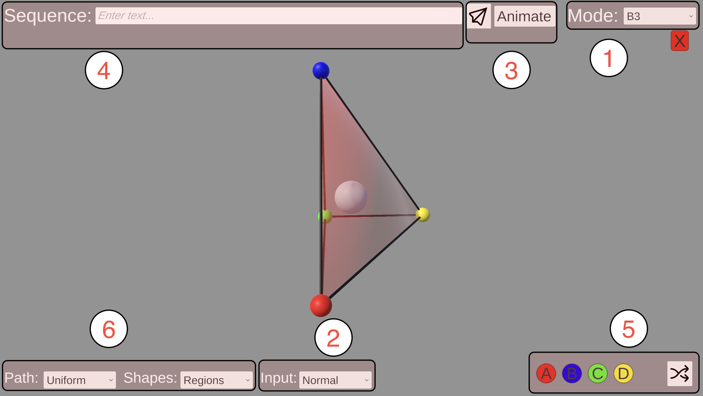

This pages goes over the basic usage of the shape visualization application. The different sections of this page will go over the different features shown on the figure below. 
The "Mode" dropdown allows you to switch between different geometry modes: Three of which correspond to tetrahedrons (A3, B3, C3), and one to cubes.
Allows you to select how you want to input character sequences into the program:
How your sequence is submitted depends on which mode you have selected. On the "Normal" mode, you will have to press Enter or to display your sequence. In "Manual" and "Batch" modes the sequence will be automatically shown.
You also have the option to animate your sequences by pressing the "animate button". This will slowly build your sequence shape by shape. Once you press this button another input will appear that will allow you to modify how fast the animation is.
You may also want to differentiate between different sections of your structure. You can define different regions of your shape to be drawn in a different color. Input a '|' character between the sections you want to distinguish.
This is the input field where you will input the characters that build up your sequence. In the "Normal" and "Manual" modes, you can edit this field directly. In the "Batch" mode, this field will be showing the current sequence from your multi-line text input, and you won't be able to edit this field directly.
Instead of editing the text of your sequence directly, you can also add new characters to your sequence by pressing the buttons corresponding to each character. Notice the color of these buttons: they correspond to the colors of the vertices of the shape upon which the shape will be reflected on for the given transformation.
Press the button to start a new color region. This will simply add a new '|' character to the end of your sequence.
The program provides you with different ways of visualizing your shapes:
The "Path" option specifies how to display the path that connects the centers of your shapes.
The "Shapes" option specifies how to display the shapes that make up your sequence